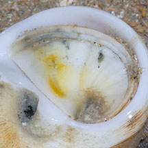
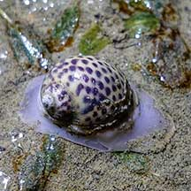
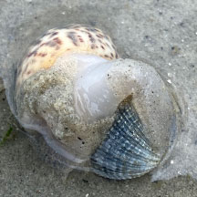

|
|
| shelled snails text index | photo index |
| Phylum Mollusca > Class Gastropoda > Family Naticidae |
| Tiger
moon snail Notocochlis tigrina Family Naticidae updated Aug 2020 Where seen? This moon snail with a spotted shell is sometimes seen on our sandy Northern shores near seagrasses. Undisturbed shores may have large numbers of them. It was previously known as Natica tigrina. Features: 2-3cm. Shell smooth thick pear-shaped with the spiral tip sticking out quite a bit, usually longer than wide. Shell pattern white or beige with brown or black spots (more of a leopard pattern than a tiger pattern). On the underside, a small comma-shaped depression. Operculum white sometimes with a dark smudge where the whorl starts, sometimes small to large bright yellow patches, a pair of spiralling grooves on the outer margin and finely serrated inner margin. Body mostly plain white or beige sometimes with darkish edges, the fleshy area near the shell often with small white spots. Tentacles short. |
 Tuas, Apr 05 |
 Small depression on underside. Operculum with dark smudge. Tuas, Apr 05 |
 Operculum with a pair of spiralling grooves on the outer margin and finely serrated inner margin. |
| Human uses: Where it is abundant, it is collected for food and the shell trade, especially in Japan, Malaysia and Indonesia. |
 |
| Tiger moon snails on Singapore shores |
On wildsingapore
flickr
|
| Other sightings on Singapore shores |
 Pasir Ris-Loyang, Oct 20 Photo shared by Richard Kuah on facebook. |
 Eating a clam! Chek Jawa, Feb 23 Photo shared by Kelvin Yong on facebook. |
|
Links
References
|